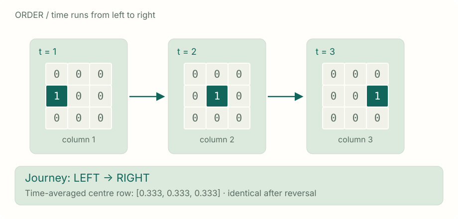
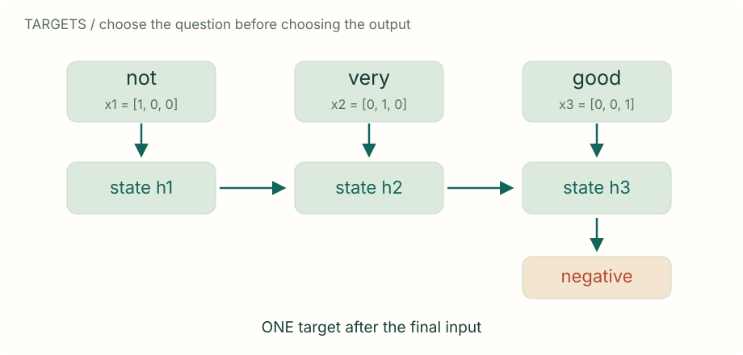
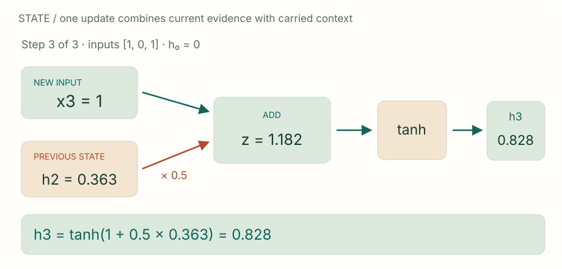
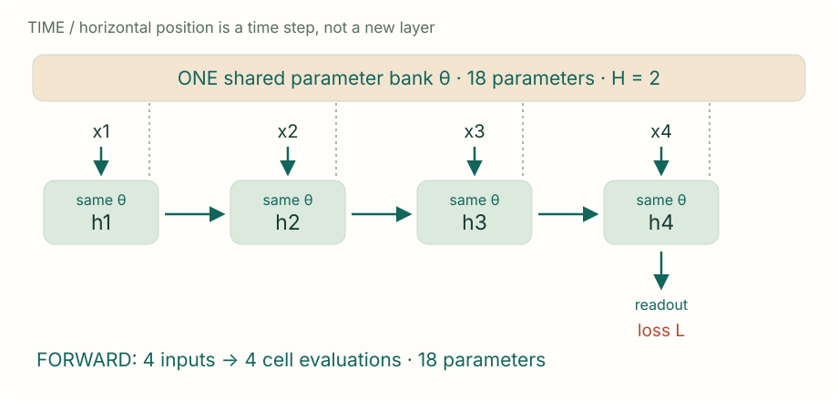
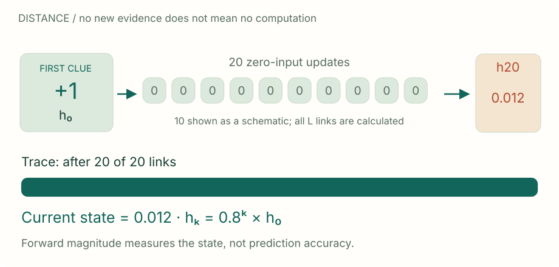
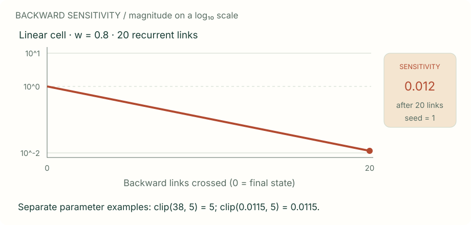

Reusable lecture assets / SVG
Make the mechanism visible.
Six original figures, with readable numbers and explicit assumptions. Save each SVG for slides, or use the worksheet's frame-download button to export another animation beat. All figures work offline.
A film is more than its frames.

Same numerical model and renderer as the live worksheet.
Download SVG ↓What should come out—and when?

Same numerical model and renderer as the live worksheet.
Download SVG ↓Read. Combine. Update.

Same numerical model and renderer as the live worksheet.
Download SVG ↓One cell. Many uses.

Same numerical model and renderer as the live worksheet.
Download SVG ↓Carry one clue through the gap.

Same numerical model and renderer as the live worksheet.
Download SVG ↓Can the correction reach the beginning?

Same numerical model and renderer as the live worksheet.
Download SVG ↓